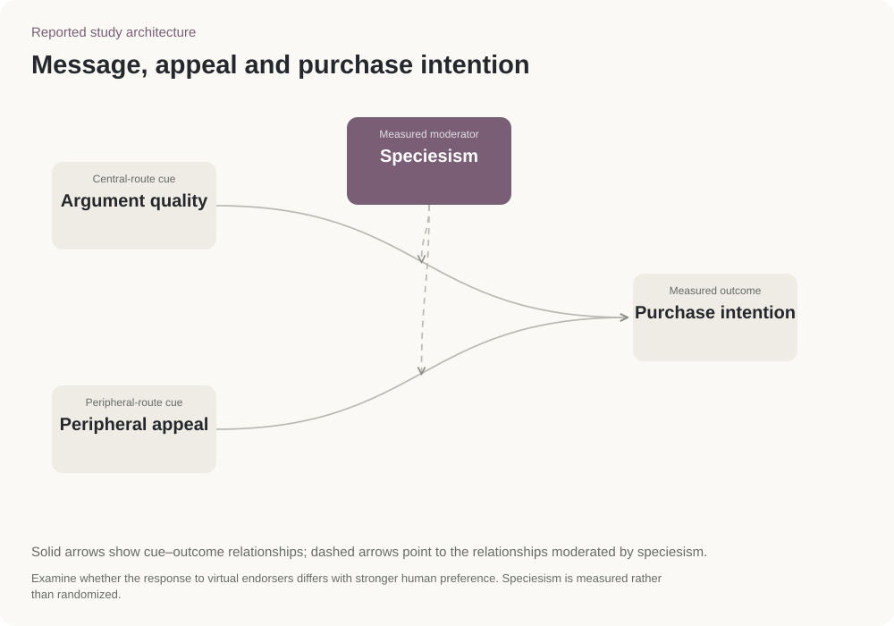

Central-route cue
Argument quality
High and low argument quality define one experimental factor. The supplied stimulus set supports this contrast; no additional conditions are introduced.
Consumer research · Generation Z
Co-authored a study of how a virtual creator and the product message relate to young consumers’ willingness to buy.
Experiment design · Consumer research · Comparing audience responses
A published Springer chapter on how audiences respond to virtual creators.
Published chapter · Springer

Each participant saw one of four simulated Instagram posts. The posts varied the strength of the product message and the creator’s appeal. The study then compared willingness to buy.
Creator-related cues were linked to willingness to buy. A stronger preference for human endorsers was linked to lower willingness to buy after seeing a virtual creator.
Check whether an audience accepts virtual creators before choosing one. An appealing appearance may not be enough for people who prefer human endorsers.
The study measured what people said they might buy after seeing a simulated post. It did not measure purchases or sales.
The product message is stronger or weaker. The creator’s appeal is higher or lower. Comparing these four versions helps separate the two influences. These are the supplied study images.


Both experimental dimensions are high. Compare with the other high-appeal cell to isolate the argument-quality contrast.
Springer chapter, DOI 10.1007/978-981-96-4116-1_9; N = 244.
Show a stronger or weaker product argument.
Vary the creator’s appeal. The study also examines attractiveness and similarity of attitudes.
Preference for human endorsers, called speciesism in this study, is measured separately. It is not an assigned post version.
Argument quality × peripheral appeal → purchase intention
The publication reports peripheral-cue relationships and moderation. Cell means and interaction coefficients are not supplied here.
The 2 × 2 experiment separates manipulated cues from the measured moderator.

Central-route cue
High and low argument quality define one experimental factor. The supplied stimulus set supports this contrast; no additional conditions are introduced.
Peripheral-route cue
Appeal is the second experimental factor. The framework includes social attractiveness, physical attractiveness and attitude similarity.
Measured outcome
Compare intention across the four stimulus conditions. The outcome is a stated response, not an observed transaction.
Measured moderator
Examine whether the response to virtual endorsers differs with stronger human preference. Speciesism is measured rather than randomized.